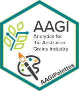
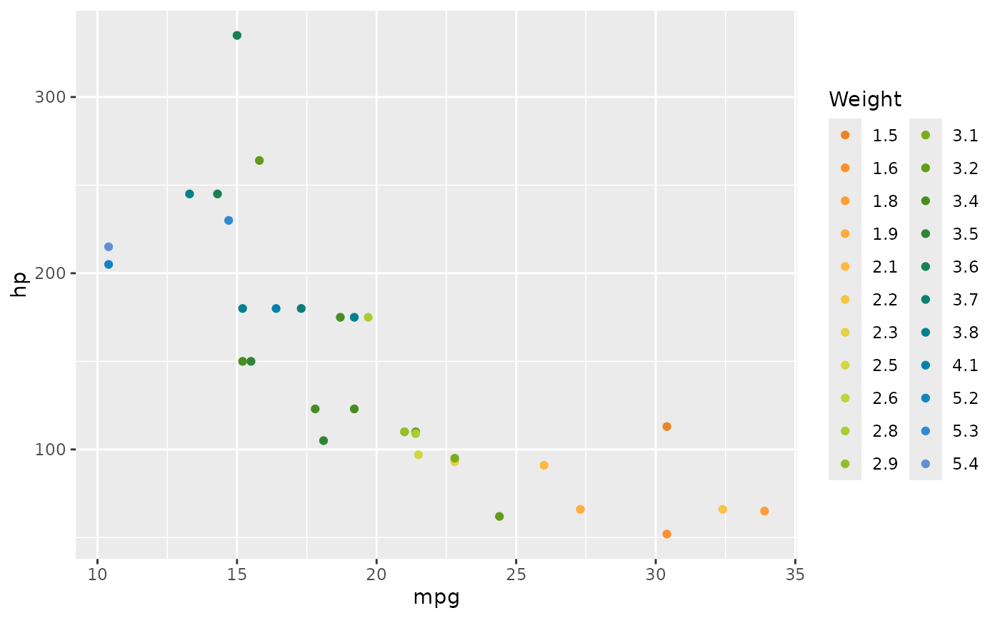

Interpolate an AAGI Colour Palette to Expand the Colour Values
Source:R/interpolate_aagi_colours.R
interpolate_aagi_colours.RdTakes a AAGI colour palette and generates more colours from it, so
that there are enough to make your chart. The interpolation method is set
to spline (the default is linear) in an attempt to reduce the number of
vomit colours that get produced when generating many colours.
Usage
interpolate_aagi_colours(
colours = c("AAGI Orange", "AAGI Yellow", "AAGI Bright Green", "AAGI Green",
"AAGI Teal", "AAGI Blue"),
direction = 1,
...
)Arguments
- colours
(
Character; given names of AAGI colours to use in the interpolation. Defaults to "AAGI Orange", "AAGI Yellow", "AAGI Bright Green", "AAGI Teal", "AAGI Blue" in that order.- direction
IntegerSets the order of colours in the scale. If1, the default order is used. If-1, the order of colours is reversed.- ...
Additional arguments to pass to
grDevices::colorRampPalette(), see details heregrDevices::colorRamp().
Examples
library(ggplot2)
x <- interpolate_aagi_colours()
# round the weights to clean up the legend, this is just an e.g. after all...
wt_vals <- x(length(unique(round(mtcars$wt, 1))))
ggplot(mtcars, aes(x = mpg, y = hp, colour = as.factor(round(wt, 1)))) +
geom_point() +
scale_colour_manual("Weight", values = wt_vals)
